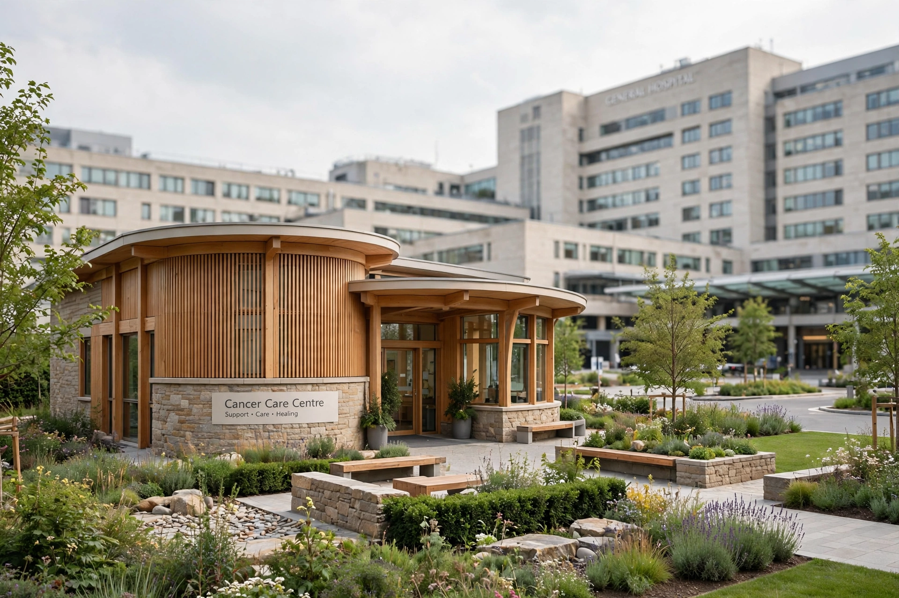

| Maggie's | |
| Type | Charity |
|---|---|
| Founded | 1996 (first centre, Edinburgh) |
| Founders | Maggie Keswick Jencks; Charles Jencks |
| Headquarters | London, United Kingdom |
| Services | Free practical, emotional and psychological support for people with cancer and their families |
Maggie's Centres are a network of drop-in centres, mostly in the United Kingdom, that provide free practical, emotional and psychological support to people with cancer, and to their families and friends. The centres are built on the grounds of National Health Service cancer hospitals but are run by the independent charity Maggie's. They are notable for their architecture: each centre is a small, domestic-scale building designed by a leading architect, on the principle that the built environment itself can contribute to recovery and wellbeing.

The centres were the idea of Maggie Keswick Jencks (1941–1995), a writer and landscape designer who, while living with advanced cancer, wrote of the need for a place where patients could find information, psychological support and a non-clinical space away from the hospital ward. Her experience was described in her article A View from the Front Line. After her death, her husband, the architectural historian Charles Jencks, worked with her oncologist and others to realise the first centre, which opened in Edinburgh in 1996 in a converted stable block beside the Western General Hospital, designed by Richard Murphy.
The network subsequently expanded across Scotland and the rest of the UK, and later internationally, with centres in Hong Kong, Tokyo and Barcelona, among others. Queen Camilla (formerly the Duchess of Cornwall) serves as the charity's president.
Maggie's commissions well-known architects to design buildings that avoid the institutional character of hospitals. Notable examples include Frank Gehry's centre at Ninewells Hospital, Dundee; Zaha Hadid's centre in Kirkcaldy, Fife; Rem Koolhaas's building at Gartnavel General Hospital, Glasgow; Norman Foster's centre at the Christie Hospital, Manchester; Daniel Libeskind's centre at the Royal Free Hospital, London; and Steven Holl's centre at St Bartholomew's Hospital, London. The buildings typically centre on a kitchen table, open space and views of gardens, reflecting Maggie Keswick Jencks's belief that patients should not "lose the joy of living in the fear of dying".
Centres are staffed by cancer support specialists, psychologists, benefits advisors and nutritionists. Services are free and require no referral or appointment; they include one-to-one and group psychological support, benefits advice, nutrition workshops, relaxation and stress-management sessions, and courses such as "Where Now?" for people who have finished treatment.